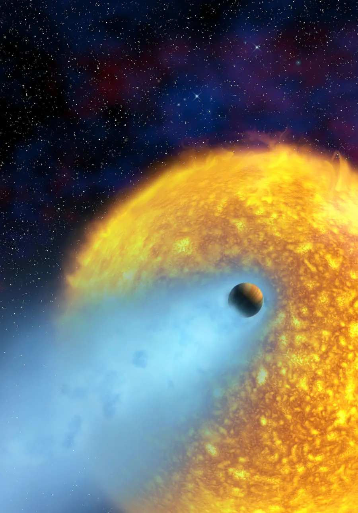

November 23, 1999
HD 209458 b: first transit and first atmosphere of an exoplanet
In November 1999, a team led by David Charbonneau reported two transits of HD 209458: the companion, already known from radial-velocity measurements, passed in front of its star and dimmed its light. The light curve indicated a gas giant with 1.27 Jupiter radii.
In 2001, the Hubble Space Telescope made the first direct detection of an exoplanet atmosphere. In 2003, Hubble showed that the planet is losing hydrogen, at least 10,000 metric tons per second; the gas envelope extends more than 200,000 kilometers. The planet orbits its star, about 150 light-years away, in 3.5 days.
Sources: arXiv: "Detection of Planetary Transits Across a Sun-like Star" (Charbonneau et al.), 1999-11-23; ESA/Hubble: "European astronomers observe first evaporating planet", 2003-03-12; ESA/Hubble image page: "First Direct Measurements of Atmosphere on World Around Another Star (artist's impression)", 2001-11-27